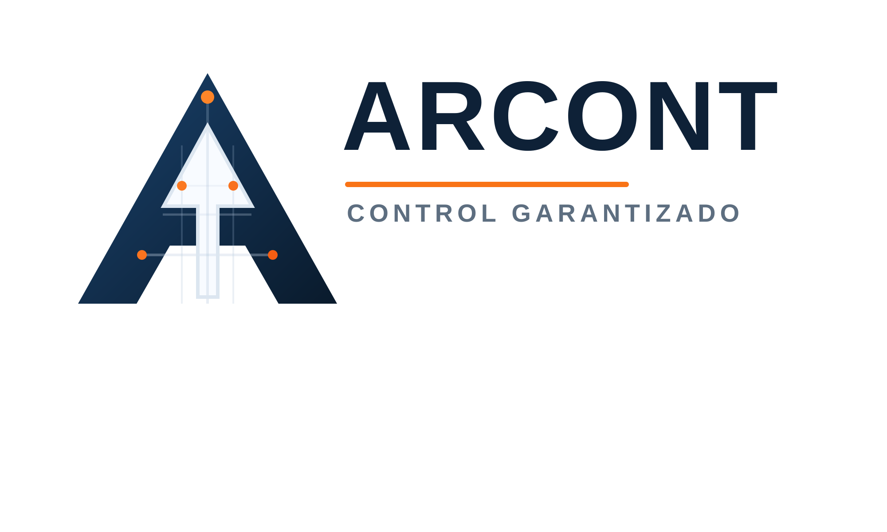
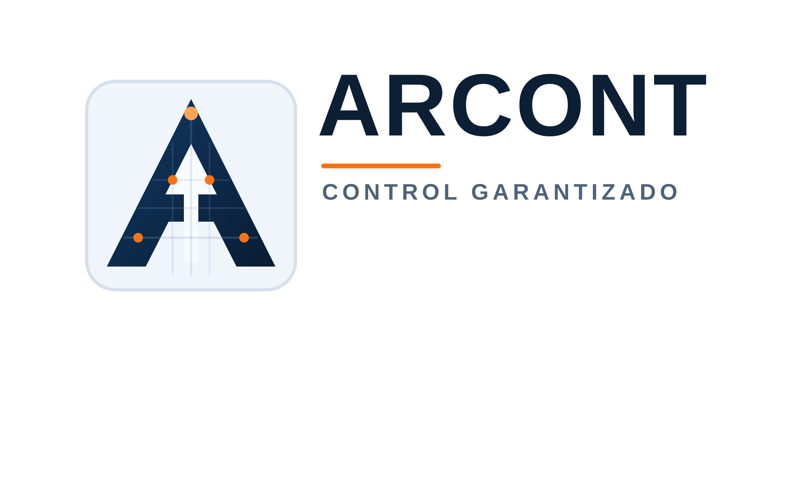
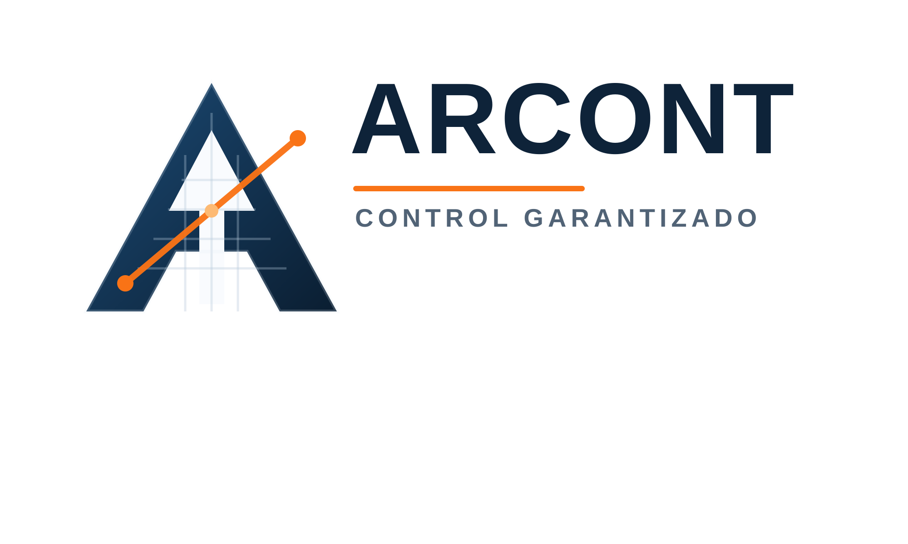
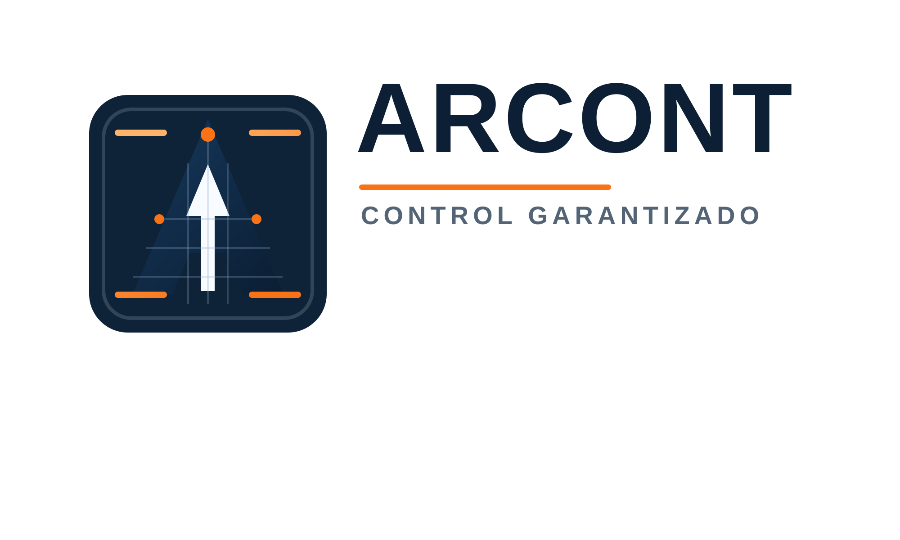

Blueprint Core
La mas equilibrada. Mantiene la idea original pero con mejor tension visual y lectura mas corporativa.

Variaciones basadas en precision estructural, lectura de planos, nodos de control y una A como simbolo central de tecnologia para construccion.
La mas equilibrada. Mantiene la idea original pero con mejor tension visual y lectura mas corporativa.

Mas producto y software. El simbolo vive dentro de un contenedor tecnico, ideal para interfaz, app o favicon.

Mas dinamica y operativa. La diagonal naranja introduce avance, coordinacion y control en tiempo real.

Mas premium y modular. Combina precision de plano con presencia fuerte y apariencia mas tecnologica.
